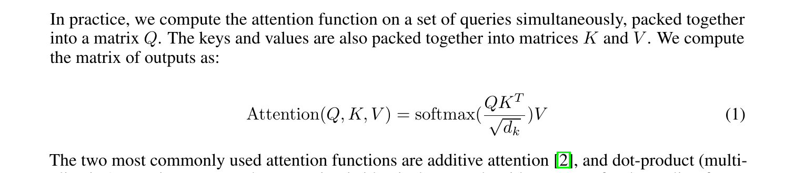
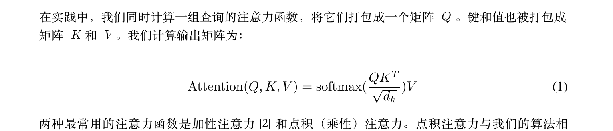
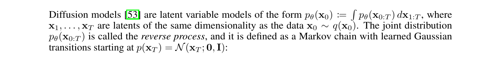
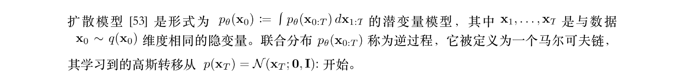
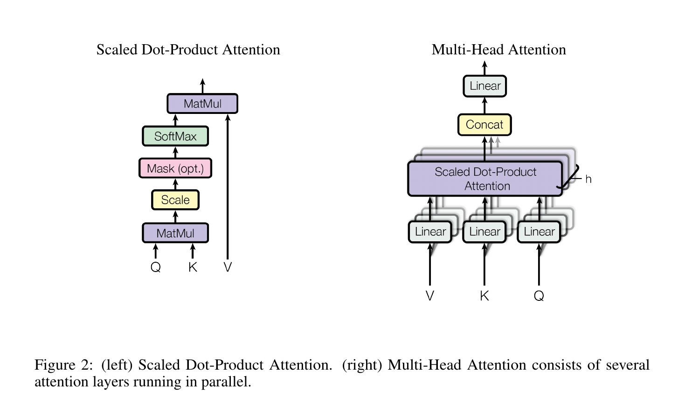
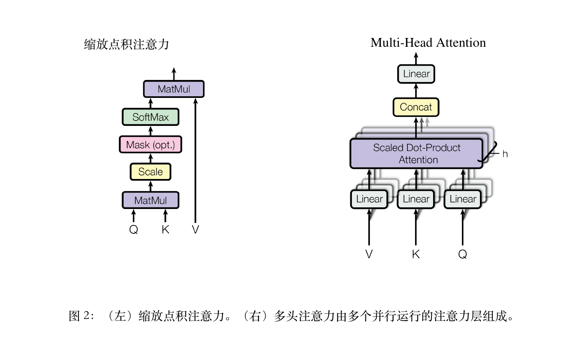
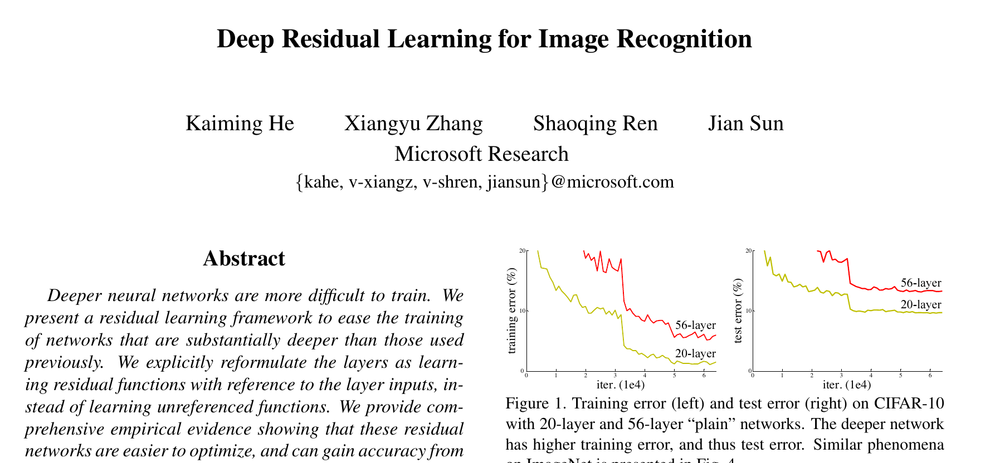
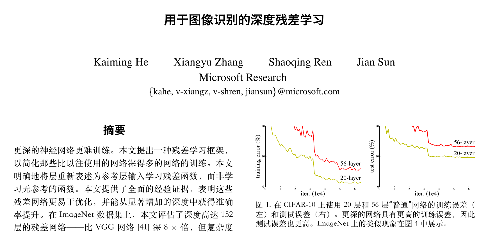
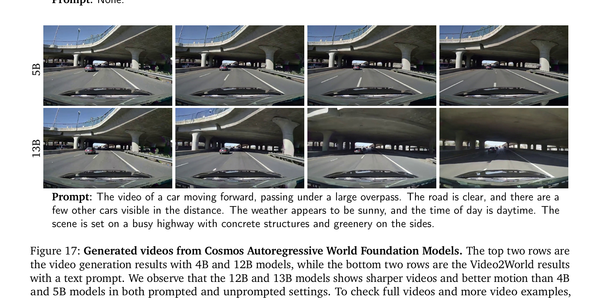
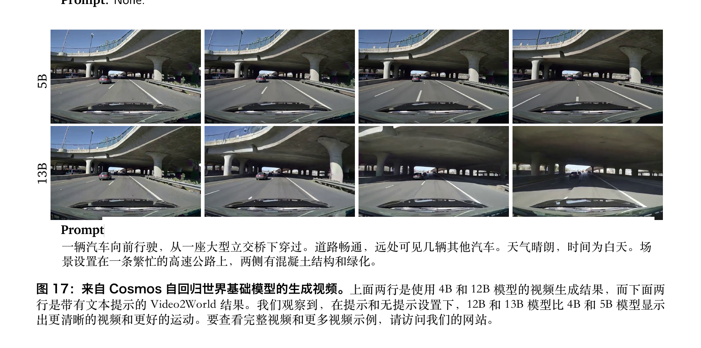

拖动分割线，逐像素检查
每一页都是真实翻译产物的整页渲染，未经修饰：左侧原文、右侧译文，分割线随你拖动。 两篇展示论文均为 CC BY 4.0 许可（worldmodel10 基准批次）。
页码
经典论文，只看最难的细节
公式、结构图、双栏首屏——版式最容易翻坏的地方，原文与译文并排对照（240 DPI 渲染）。
Attention Is All You Need · 独立公式：正文照译，公式冻结attention · p4 · 240dpi
EN 原文

ZH 译文

上下两条对照：段落译成了中文，公式 (1) 与编号一个像素没动 · 全篇 15 页：0 error · visual 0.9041 · 严格门通过
DDPM · 行内公式：数学嵌在中文句子里ddpm · p2 · 240dpi · 难度更高
EN 原文

ZH 译文

行内数学比独立公式更难：pθ(x0)、x0∼q(x0) 要嵌进重新断行的中文句子里，还得跟上标注 [53] 一起原样保留
Attention · 结构图attention · p4
EN 原文

ZH 译文

图 2 结构图：图内冻结，图注翻译位置不动
ResNet · 双栏首屏resnet · p1
EN 原文

ZH 译文

CVPR 双栏：栏宽与图 1 原位 · 12 页：0 error · visual 0.8621
Cosmos · 长文深处cosmos · p34 图 17
EN 原文

ZH 译文

75 页第 34 页：帧网格 + Prompt 翻译 · 后段不衰减
遵守论文许可：仅 CC BY 4.0 论文（Qwen-RobotWorld、Cosmos）公开展示完整翻译页； arXiv 非独占许可论文（Attention、ResNet）只展示小幅局部对比与聚合指标。